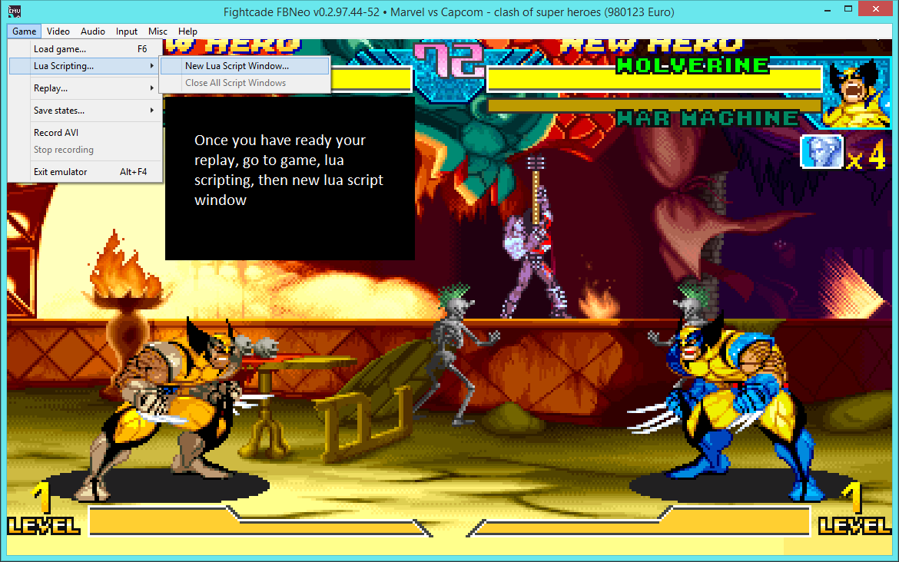
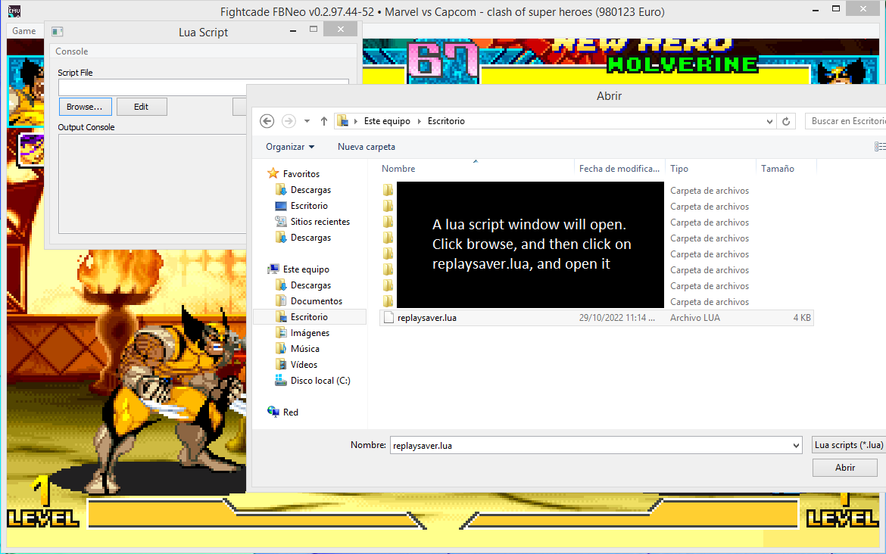
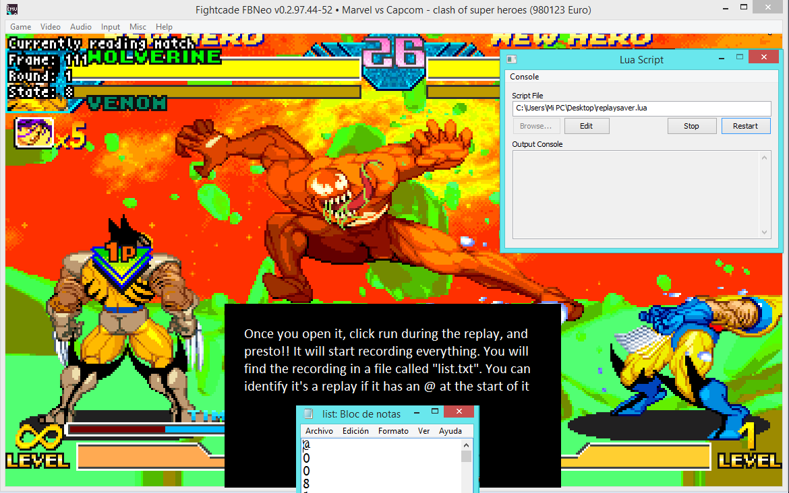
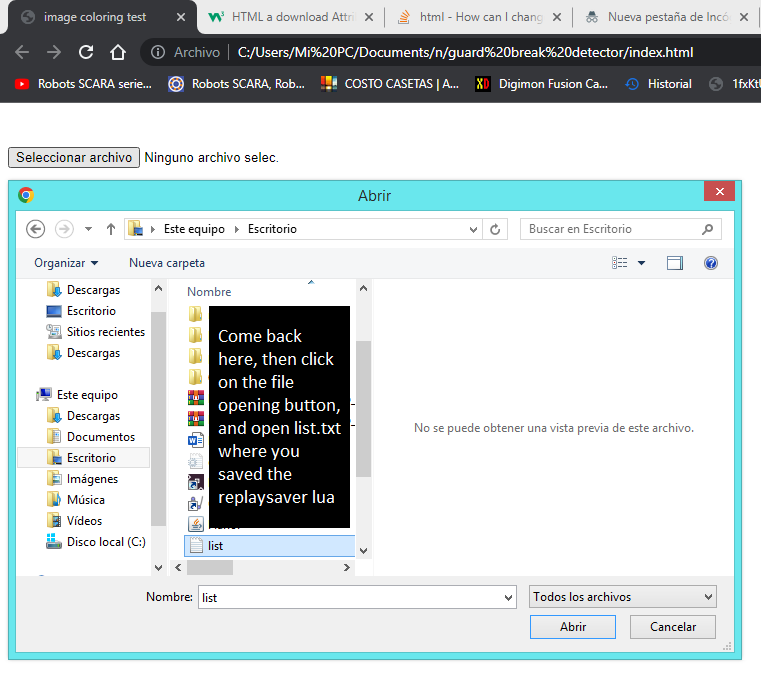
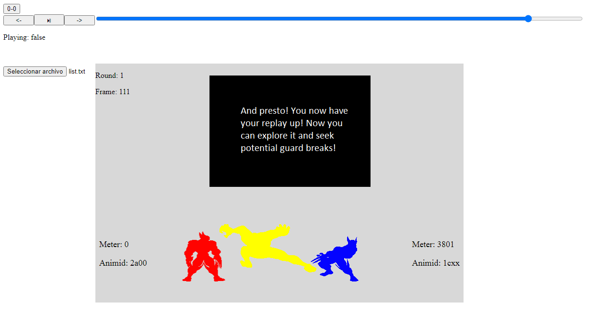

Welcome to the guard break detector! In this page, you can see where and at what point did you or your opponent got guardbroken
Scroll down this page to learn how to use this program
Note:
The program only currently works with Wolverine, War Machine, Venom, Red Venom and Golden War Machine




